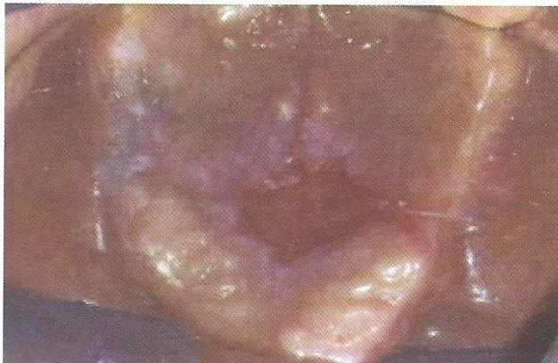

Lichen planus
erosive/ulcerative forms
เกิดจากปฏิกิริยาจากระบบภูมิคุ้มกันของร่างกาย
ทำให้มีการหลุดลอกของเยื่อบุผิวออกจากชั้นเนื้อเยื่อเกี่ยวพัน
รอยโรคสีขาวที่มีลักษณะร่างแหสีขาว Wickham striae
ร่วมกับมีรอยแดงหรือแผลถลอก
การรักษา ใช้ยากลุ่ม steroid และ immunosuppressant